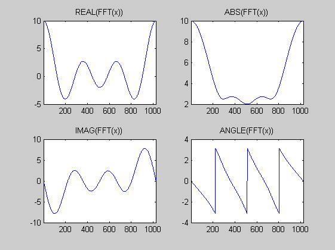

Contents
Goertzel-Algorithmus
Zeigen Sie an einem Zahlenbeispiel, dass der Goertzel-Algorithmus das gleiche Ergebnis wie die DFT liefert. Bei welchen Frequenzen treten die stärksten Ungenauigkeiten auf.
clear all; close all N =1024; x = [1,zeros(1,N-1)]; % x = randn(1,N); x = [ 1 2 3 4 zeros(1,N-4)]; X = fft(x); figure(1); subplot(2,2,1); plot(real(X)); title('REAL(FFT(x))'); xlim([1,N]); subplot(2,2,3); plot(imag(X)); title('IMAG(FFT(x))');xlim([1,N]); subplot(2,2,2); plot(abs(X)); title('ABS(FFT(x))');xlim([1,N]); subplot(2,2,4); plot(angle(X)); title('ANGLE(FFT(x))');xlim([1,N]);
Frequenzkomponenten mit Goertzel
X_G=[]; % for nu =0:N-1; % b= 1; % a = [1, ...)]; % y = filter(b,a,[x,0]); % X_G(nu+1) = y(N+1); % % Alternative % %a = [1, -2* cos(2*pi*nu/N), 1]; % %y = filter(b,a,[x,0]); % %X_G(nu+1) = y(N+1) - exp(-2*pi*j*nu/N)*y(N); % end % subplot(2,2,1); hold on; plot(real(X_G),'r--'); title('REAL(FFT(x))'); xlim([1,N]); % legend('DFT','Goertzel','location','best') % subplot(2,2,3); hold on; plot(imag(X_G),'r--'); title('IMAG(FFT(x))');xlim([1,N]); % subplot(2,2,2); hold on; plot(abs(X_G),'r--'); title('ABS(FFT(x))');xlim([1,N]); % subplot(2,2,4); hold on; plot(angle(X_G),'r--'); title('ANGLE(FFT(x))');xlim([1,N]); % % % figure(2); % Fehler % subplot(2,2,1); hold on; plot(real(X_G) - real(X),'r'); title('Diff_{REAL(FFT(x))}'); xlim([1,N]); % subplot(2,2,3); hold on; plot(imag(X_G) - imag(X),'r'); title('Diff_{IMAG(FFT(x))}');xlim([1,N]); % subplot(2,2,2); hold on; plot(abs(X_G) - abs(X),'r'); title('Diff_{ABS(FFT(x))}');xlim([1,N]); % subplot(2,2,4); hold on; plot(angle(X_G)- angle(X),'r'); title('Diff_{ANGLE(FFT(x))}');xlim([1,N]);